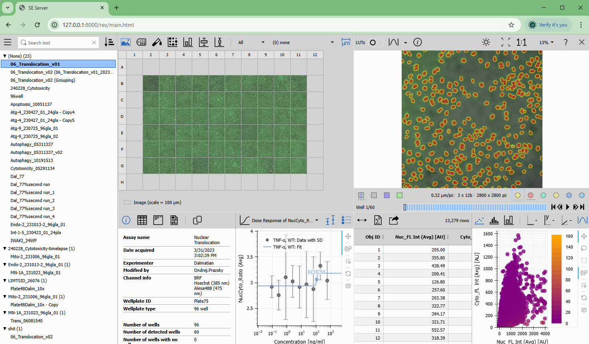

Smart Experiment Server
Version 1.0.0 (February 2025)
The SE Server is a web server providing read access to experiments acquired with NIS Elements software.
User logs in to windows domain with his username and password. If successful all acquired experiments
inside his acquisition folder can be browsed and visualized.
Viewer capabilities
- Visualize ND2 files in 2D image view or 3D volume view.
- Viewing on individual channel or all channels.
- Viewing one or more binary layers.
- Using Look-up-tables (LUTs) (per-channel gain) and auto LUTs to enhance image contrast for viewing.
- Inspecting image information.
- Navigating through the ND2 frames in all dimensions.
- Visualizing results of analysis.
- Downloading results as CSV, Excel or PDF report.
Installation
- SE Server on localhost
- SE Server on local network
- How to install self-signed certificate on client machine
- Accessing SE Server from outside
Screenshots
